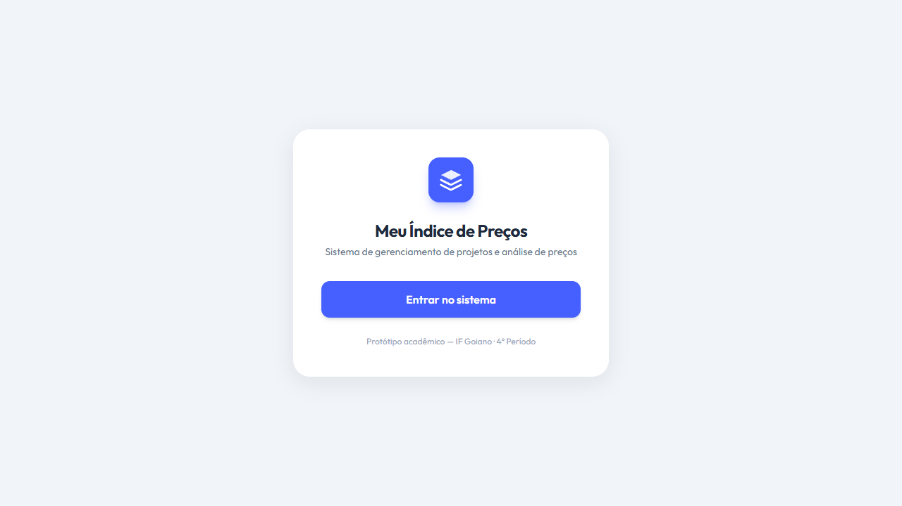
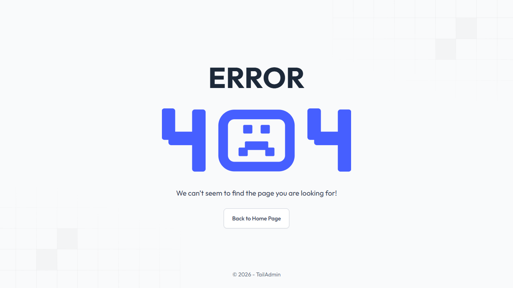

Meu Índice de Preço
Plataforma Web para Inflação Local
Apresentação e Documentação de Frontend
Fernando Alves de Souza, Felipe Montalvão, Victor Hugo
Data: 25/03/2026
1. Introdução e Problematização
- O Problema: Índices nacionais (como IPCA) não refletem a real variação do custo de vida na cidade de Morrinhos-GO.
- O Impacto: Dificuldade no planejamento financeiro das famílias locais devido à falta de dados compreensíveis e rápidos.
- A Solução: Um Website interativo acompanhando a flutuação de 30 itens de alto consumo, atualizado quinzenalmente.
2. Funcionalidades Centrais
Duas mecânicas promovem a educação financeira:
- Painel da Inflação Geral: Exibição transparente via gráficos da variação média baseada nas coletas em 10 estabelecimentos físicos.
- Simulador de Inflação Personalizada: O cidadão insere seus hábitos mensais reais e calcula o impacto isolado no próprio bolso.
- Painel Administrativo: Inserção em lote das pesquisas logradas pelos estudantes.
Visuais do Portal
Painel de Inflação

Simulador Pessoal

3. Tecnologias e Recursos Exigidos
- Frontend: HTML5, CSS3, e JavaScript via bibliotecas interativas (React).
- Deploy e Hospedagem: Servidor com NGINX / Apache, rodando em Nuvem/VPS para segurar tráfego regional bruto.
- Ferramentas Auxiliares: Git/GitHub, Figma para UI/UX e VS Code.
Hardware do Time: Máquinas focadas em compilação moderna (16GB RAM) ativas para manutenção do ambiente.
4. Relacionamento: IU vs Casos de Uso
| UC |
Componente (Tela Frontend) |
Descrição do Fluxo |
| UC01 - Consultar Inflação | PainelInflacao | Visualizar gráficos reais do cenário municipal. |
| UC02 - Inflação Pessoal | SimuladorPessoal | Formulário dinâmico de inserção de peso de consumo pessoal. |
| UC03 - Envio de Feedback | ContatoDeFeedback | Aba acessível de sugestões populares atrelada a API. |
| UC04 - Cadastro de Preços | GestaoColetas (Admin) | Dashboard onde pesquisadores dão alta nas cotações de forma restrita (Logada). |
5. Perfis e Estrutura da Equipe Web
- Nível Júnior: Codificação do layout puro e semântico (HTML, CSS). Entrega de botões responsivos, criação focada em acessibilidade nos formulários web e estruturação da apresentação visual (Mobile-first).
- Nível Pleno: Transcrição da regra do cálculo do IBGE para algoritmos \textit{client-side} em JavaScript. Integração dinâmica do \textit{State} na calculadora pessoal do Cidadão e manipulação do Gráfico.
- Tech Lead / Sênior: Defensor da arquitetura do Projeto. Gestão do Servidor Linux (VPS), configuração robusta de acessos NGINX e proteção dos certificados (HTTPS/SSL).
6. Esforço e Alocação (Desenvolvimento Web)
Das 92 horas destinadas unicamente ao projeto Web.
Sênior
16h
Configuração NGINX, SSL e Repositório Central
Pleno
24h
Lógicas Matemáticas e Gráficos da Bolsa dos 30 itens
Júnior
52h
Páginas de feedback e construção estrita do HTML
7. Precificação Orçamentária Web
- Sênior: 16h × R$ 150 = R$ 2.400,00
- Pleno: 24h × R$ 90 = R$ 2.160,00
- Júnior: 52h × R$ 50 = R$ 2.600,00
- Despesas em Hospedagens (Servidor NGINX/Cloud): R$ 1.500,00
- Lucro Organizacional/Fundo (20%): R$ 1.732,00
Entrega Tecnológica: R$ 10.392,00
* Apenas orçamento da programação, ignorando coletas manuais e publicidades no rádio.
8. Conclusões Práticas
- Autonomia Civil: Trazer a informação inflacionária diretamente para a métrica de Morrinhos-GO aumenta a transparência social.
- Mapeamento de Esforço: Garantir que a lógica espinhosa fique com Pleno, o visual resguardado com Júnior e a estabilidade de acessos sob alçada Sênior.
- Legado do Projeto: Promover a percepção aguda sobre poder de compra nas famílias locais por décadas.
Obrigado!